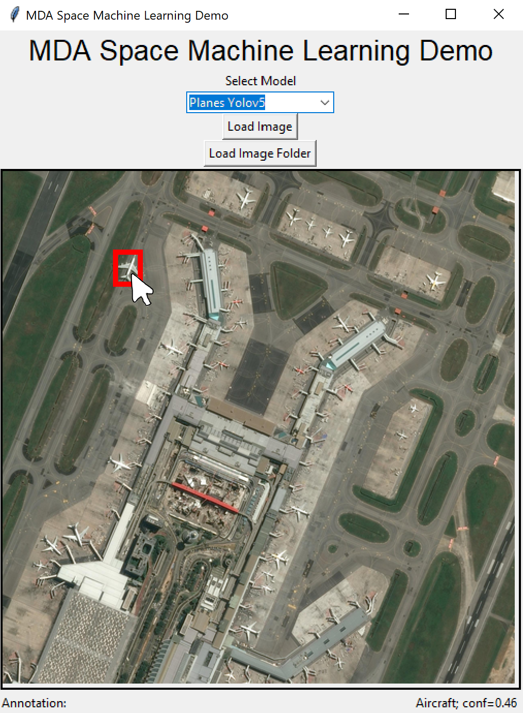

Deploying Machine Learning Networks on AMD Xilinx VCK5000 FPGA - Sponsored by MDA Space

Developed a GUI in Python Using Tkinter to run model predictions and labelling. Interactive as you moved
your mouse over different parts of the image, showed the labels.Github
Worked on setting up VCK5000 and figuring out how to run different models on the DPU. Worked on
Quantisation, Deployment of models and more.
Integrated Running Models on the application with the GUI. Implemented batch processing to the DPU, to demonstrate
maximum performance (IO component of time was significant).
Built scripts to collect data (Power, Temperature, Voltages...) from the hardware and save to csv to track energy
usage and other metrics during inference.
Recreating Bat Echolocation: Environment Reconstruction with Sound Waves Using Machine Learning
Led machine learning effort to convert audio signal inputs into 3D spatial images implementing a
convolution neural network with TensorFlow.
Leveraged Wandb for rigorous tracking and dashboard analytics, streamlining experiment
record-keeping and enhancing model performance tuning.
Modelling Climate Change: A Python Simulation of the Impact of Global Warming on the Atlantic Meridional
Overturning Circulation
Built a simulation following a pivotal mathemetical paper on the theory of tipping points in
climate change.
This simulation models the effects of global warming on the Atlantic Meridional Overturning
Circulation (AMOC) using Python, providing insights into potential climate change scenarios.